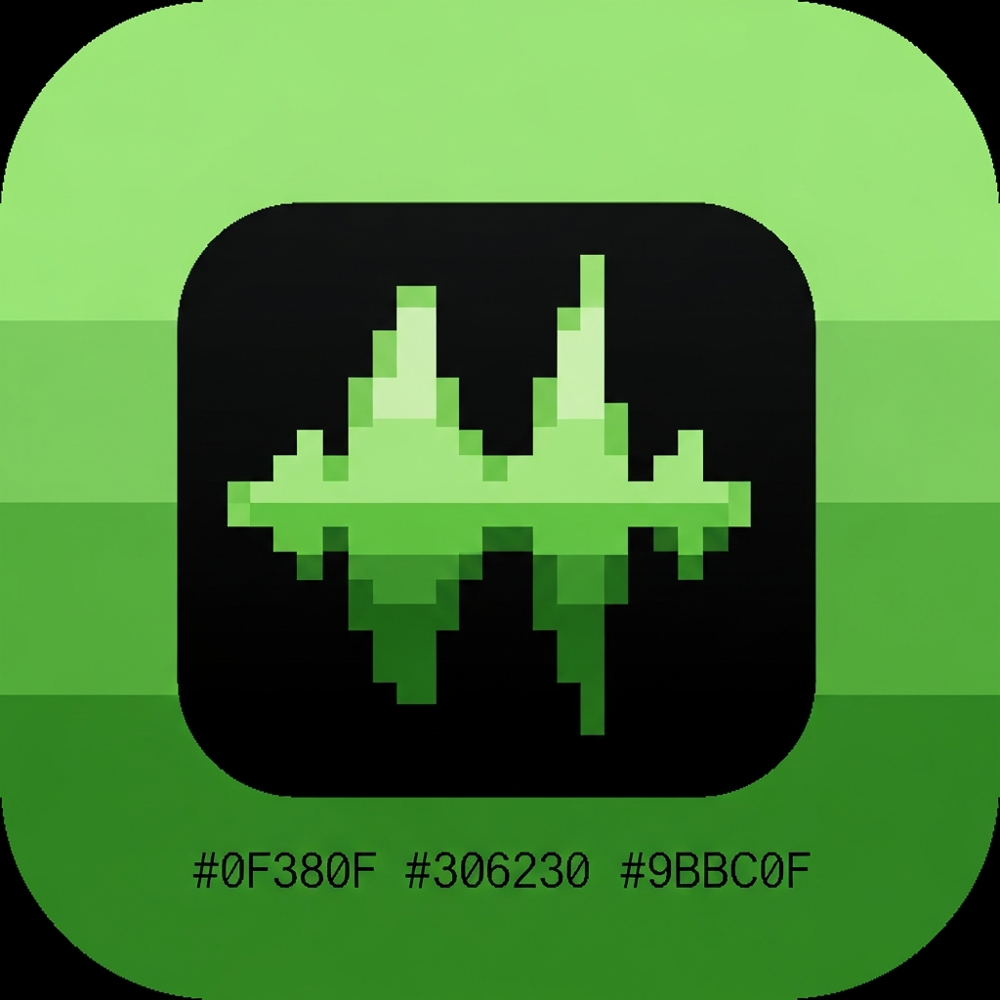
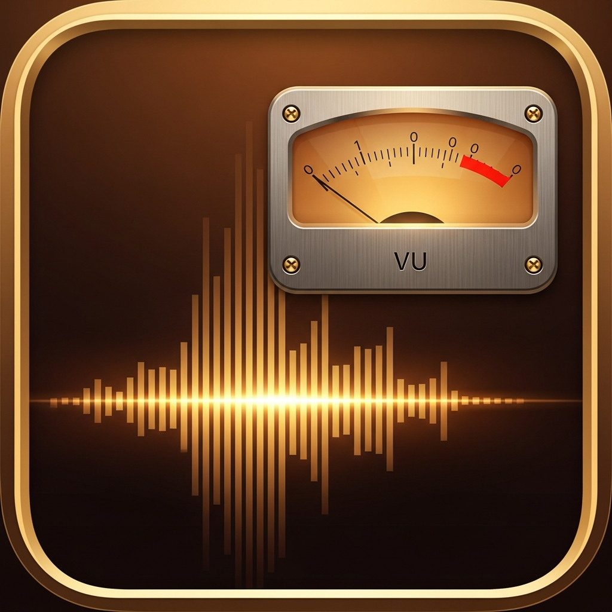
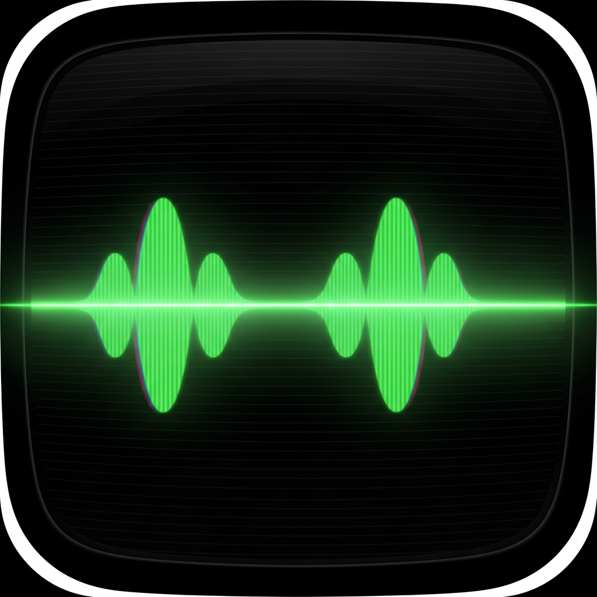

“We don't ship sound libraries. We ship a synth.”— William Jia Min, founder
Four icons. One app.
Right-click → Save image, or grab the press archive at the bottom of this page.

GBA
ANALOG
CRTEverything below is licensed for editorial use. If you need a higher-res asset or a custom screenshot, email press@simplevisualnoise.app and we'll get back to you the same day.
Right-click → Save image, or grab the press archive at the bottom of this page.

GBA
ANALOG
CRTOne-liner — Simple Visual Noise is a procedural sound studio for iOS, with a generative composer that evolves your soundscape over hours without ever repeating.
Short description — White, pink, brown and custom-tilt noise, layered with binaural cues and ten hand-photographed mood backdrops. Every sound is synthesized live on-device; every visual is pre-baked, never streamed. $4.99 one-time, no subscription.
Long description — Simple Visual Noise reimagines the ambient sound app category by replacing sample libraries with on-device synthesis. The custom tilt slider gives users a continuous parameter (the spectrum's α slope) instead of a fixed white/pink/brown menu. A generative composer drifts the mix over time via per-layer modulators — eight hand-tuned patterns covering focus, sleep, relaxation, meditation, dream-cue and ambience modes. Premium imagery is pre-rendered via Krea so every backdrop is curated, never algorithmic. Deep iOS integration includes a Live Activity, Apple Watch companion, Control Center widget, App Intents and a Lock Screen Now Playing surface. Free to use; $4.99 one-time IAP unlocks the music library, alternate icons and unlimited custom mixes.
From conversations with early testers and the developer. Use any of these, attributed.
“We don't ship sound libraries. We ship a synth.”— William Jia Min, founder
“It's the first noise app where I can hear what changes when I move a slider.”— TestFlight beta tester, 2026-04
“The custom-tilt slider does what Endel's prompt box pretends to do — with one finger.”— developer notes